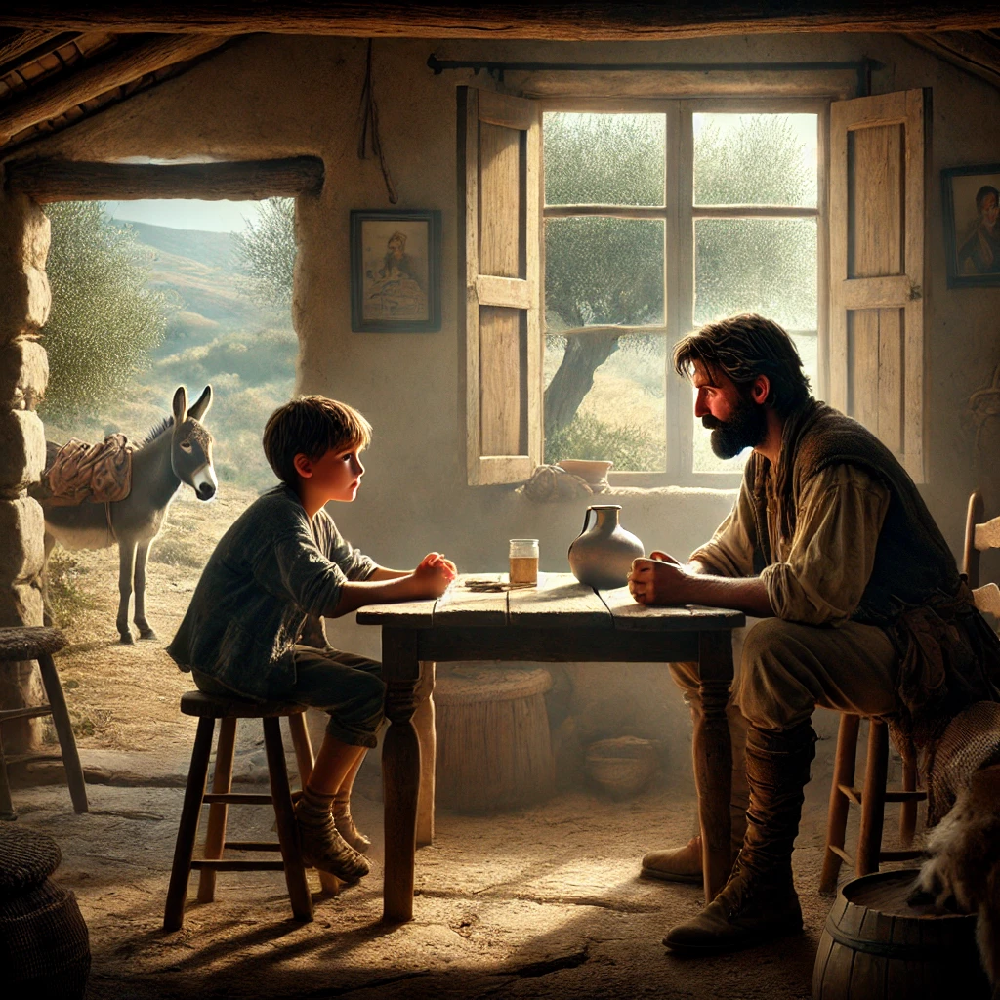

19. Dezember
Die Wahrheit enthüllt
Johann wischte sich das Salzwasser aus dem Gesicht, das ihm von der Welle ins Haar gespritzt war, und setzte sich aufrecht hin. Noch immer spürte er die Nachwirkungen dessen, was er gerade erlebt hatte. Es war, als hätte er in einen anderen Raum geschaut, in eine fremde und doch seltsam vertraute Welt.
„Maggy,“ begann er zögerlich und blickte zu ihr hinüber. Sie saß mit verschränkten Beinen auf dem Deck, die Sonne spiegelte sich in ihren blonden Haaren. „Ich… ich habe etwas gesehen. Mein Zuhause… aber es war nicht mehr mein Zuhause. Und ein Junge… er hieß Nahuel. Er sah aus wie ich, aber irgendwie auch nicht.“
Maggy nickte, als hätte sie so etwas schon erwartet. „Johann,“ sagte sie mit einer Ernsthaftigkeit, die man selten bei ihr sah, „das war keine normale Vorstellung. Ich glaube, du hast einen Blick durch den Vorhang dieser Welt geworfen – in die andere Welt. In gewisser Weise… hast du die Mächtigen gesehen. Die Wesen, die das Schicksal lenken.“
„Die Mächtigen?“ Johann runzelte die Stirn. „Das klingt wie aus einem Märchen. Vielleicht war es einfach nur ein Traum.“
Maggy lächelte, aber etwas in ihren Augen verriet, dass sie mehr wusste. „Vielleicht,“ sagte sie. Doch Johann konnte spüren, dass sie ihm Zeit geben wollte, selbst zur Wahrheit zu finden.
Ankunft in Griechenland
Das Boot legte leise an einer felsigen Küste an, weit entfernt von jeglichem Hafen. Der Kapitän, ein wortkarger Mann, deutete nur in Richtung eines Pfades, der sich zwischen Olivenbäumen hinaufschlängelte.
„Folgt dem Weg,“ sagte er. Ohne ein weiteres Wort wendete er das Boot und segelte davon.
Johann, Maggy und Hans schulterten ihre Taschen und machten sich auf den Weg. Der Pfad führte sie zu einer verlassenen Hirtenhütte, die schief an einen Hügel gelehnt war. Kaum hatten sie die Schwelle betreten, sprang Carlos aus einem Schatten hervor.
„Ihr seid da!“ rief er mit einer Wärme, die Johann fast umhaute. Carlos umarmte jeden von ihnen, die Erleichterung war ihm ins Gesicht geschrieben.
Doch Johann hatte keine Geduld für herzliche Wiedersehen. Die Worte sprudelten förmlich aus ihm heraus. „Was soll das alles? Wieso wurde ich entführt? Was hat es mit dieser ganzen Geschichte auf sich? Und wer sind diese Leute, die uns verfolgen?“
Carlos nickte und setzte sich auf einen der alten Stühle. „Setz dich, Johann. Es ist eine lange Geschichte. Aber ich verspreche dir, am Ende wird alles einen Sinn ergeben.“
Die Geschichte von Thea
„Vielleicht hast du schon von Thea gehört,“ begann Carlos, seine Stimme schwer. „Meine Tochter, mein ein und alles. Ich habe immer geglaubt, dass die Prophezeiung auf sie zutrifft. Es war mein größter Wunsch – und meine größte Angst. Denn mit der Gabe kommt nicht nur Macht, sondern auch Gefahr.“
Johann beugte sich vor. „Welche Gefahr?“
„Man wird sichtbar,“ erklärte Carlos. „Für die, die selbst Macht wollen. Manche werden eifersüchtig, andere versuchen, dich zu manipulieren. Und einige wollen dich zerstören.“
Carlos‘ Gesicht verdunkelte sich, als er fortfuhr. „Thea wurde entführt, eine Woche vor ihrem zehnten Geburtstag. Anfangs gab es keine Spur von ihr. Aber ich wusste, dass sie, wenn die Prophezeiung auf sie zutrifft, einen Weg in die Freiheit finden würde. Denn ihre Kraft wäre stärker als die ihrer Entführer.“
„Aber sie hat sich nicht befreit,“ murmelte Johann.
„Nein,“ sagte Carlos. „Und das bedeutete zwei Dinge: Erstens, dass die Prophezeiung nicht auf Thea zutrifft. Und zweitens, dass sie dich betrifft, Johann.“
Johann schluckte.
Carlos fuhr fort: „Ich wusste, dass nur du mir helfen kannst, Thea zu befreien. Aber als ich dir schrieb, hast du nicht geantwortet. Ich rief Freunde in Lissabon an, die mir sagten, du seist nach Italien gefahren. Da habe ich Hans gebeten, dir zu folgen.“
Hans ergriff das Wort. „Ich habe gewartet, Johann. Ich wollte dich ansprechen, sobald sich eine gute Gelegenheit ergab. Doch dann habe ich gesehen, dass du nicht nur von mir verfolgt wurdest. Es war keine Option mehr, einfach zu reden.“
„Und dann hast du mich einfach entführt?“ fragte Johann gereizt.
Hans nickte zerknirscht. „Als ihr abreisen wolltet wusste ich, ich muss etwas tun, bevor Du weg bist. Es musste plötzlich alles ganz schnell gehen. Ich hatte nicht mehr die Zeit, zu versuchen Dich zu überzeugen. Es tut mir leid, Johann. Aber ich hatte Angst – um dich und um Thea.“
„Um mich?“ Johann hob die Augenbrauen. „Ich dachte, wenn die Prophezeiung auf mich zutrifft, bin ich unbesiegbar.“
Carlos schüttelte den Kopf. „Nein, Johann. Nicht, solange du deine Kraft nicht kennst.“
Er lehnte sich vor und begann zu erzählen: „Stell dir einen Elefanten im Zirkus vor. Er ist sein ganzes Leben lang an einen Pflock gekettet. Eines Tages vergisst sein Wärter, die Kette anzubringen. Doch der Elefant läuft nicht weg. Er bleibt einfach stehen, weil er verlernt hat, dass er frei sein kann. Du bist wie dieser Elefant, Johann. Solange du nicht weißt, dass du Kräfte besitzt, mit denen Du Die Welt bezwingen kannst, wirst du diese Kräfte auch nicht nutzen können. Solange Du nicht weisst, dass Du komplett frei bist in deinen Handlungen, und andere Menschen auf dieser Welt sich Dir und Deinem Willen nicht in die Quere stellen können, solange bist Du eben nicht wirklich frei, weil Du den Schritt in die Freiheit nicht gehen wirst.“
Johann schaute etwas verwirrt, das war irgendwie irre und auch ein bisschen viel auf einmal.
Carlos’ Stimme wurde leiser. „Deshalb mussten wir dich erreichen, bevor es die Entführer taten. Du musst lernen, deine Kräfte zu beherrschen. Und…“ Seine Augen wurden feucht. „Du musst mir helfen, Thea zu retten. Bitte.“
Johann spürte die Verzweiflung in Carlos’ Stimme.
Carlos’ Stimme war leise, fast brüchig, als er fortfuhr: „Ich habe jetzt die Möglichkeit gehabt, Dir mein Anliegen vorzubringen. Und wir konnten Dir erklären was passiert, und Dir helfen, deine Kräfte kennenzulernen. Es gibt keine Grund, dich weiter hier zu halten. Du bist frei, Johann. Du kannst jetzt zurück zu deinen Eltern gehen.”
Johann sah ihn skeptisch an. „Moment mal, Carlos. Du sagst, ich bin frei. Aber bin ich auch sicher? Die Männer, die uns verfolgt haben – sind sie weg? Und was ist, wenn sie zurückkommen? Ist das alles für mich immer noch lebensgefährlich?“
Carlos zögerte, dann sprach er langsam: „Ich kann dir nicht garantieren, dass sie dich nicht mehr suchen werden. Sie wissen, dass du etwas Besonderes bist. Aber ich glaube, dass du jetzt besser vorbereitet bist. Deine Verbindung zur anderen Welt ist deine größte Waffe. Wenn du sie nutzt, kannst du dich schützen – durch deinen Willen und die Unterstützung der Mächte, die du gesehen hast. Wenn du verfolgt wirst – und das kann passieren – solltest du mit dem, was du schon gelernt hast, in der Lage sein, dich allein zu schützen. Aber…“
Er hielt inne, seine Augen suchten Johanns, voller Hoffnung und Verzweiflung zugleich. „Ich bitte dich: Hilf mir, Thea zu finden und zu befreien. Ich weiß, dass du das kannst. Du bist der Einzige, der das kann.“
Was soll Johann tun?
- Nach Hause zu seinen Eltern fahren
- Carlos helfen, Thea zu retten